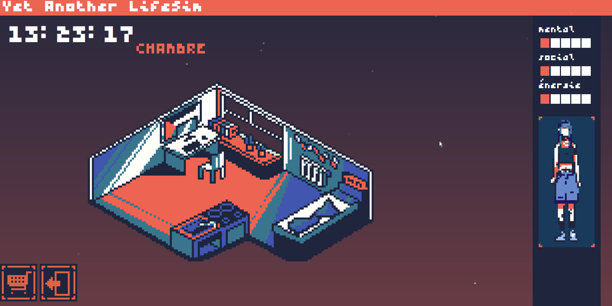
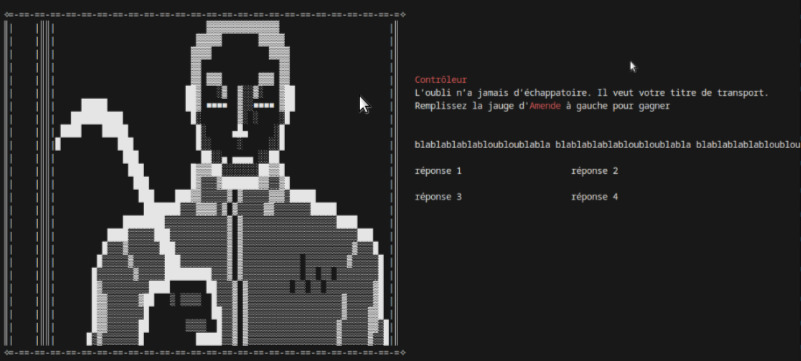
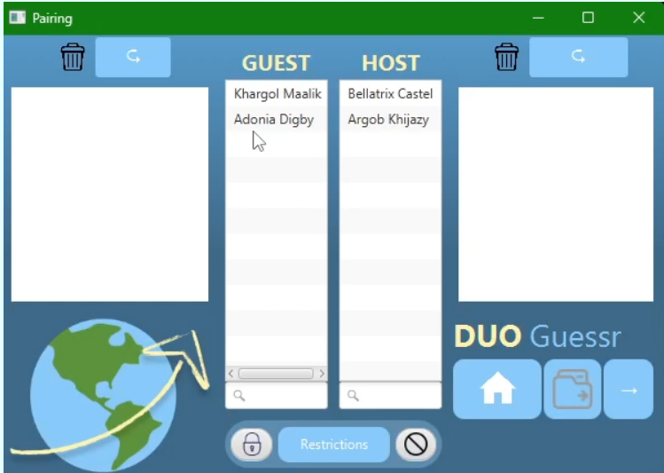

Mes projets
Pour voir mes projets, voir mon gitlab et github
Mes projets personnels

Yet Another Life Sim
HTML / CSS / JS / Twine
Life simulator interactif, le git contient une version antérieure du projet en cours, sans la partie Twine implémentant la boucle principale du jeu. Le visuel est cependant complet et animé sur le git, et le jeu jouable via la console
- Développement Web (HTML, CSS, JavaScript)
- Intégration de Twine pour la narration interactive
- Animation CSS et interactivité via la console
Cliquer pour rediriger sur le projet
Mes projets universitaires

Too Late To Compile
iJava (Framework java)
Visual Novel interractif, Quizz ludo-pédagogique et scenarii multiples
Compétences :
- Développement Java avec le framework iJava
- Création de Visual Novels et scénarios interactifs
- Conception d’interfaces utilisateur (UI) pour un quiz ludo-pédagogique
Télécharger le fichier ZIP

DuoGuessr
Java / JavaFX
Logiciel d'appariement d'étudiant.e dans le cadre d'échange linguistiques, front-end réalisé en JavaFX et back-end réalisé en Java
Compétences :
- Développement Java avec JavaFX pour le front-end
- Gestion des échanges de données entre le front-end et le back-end
- Création de l'interface utilisateur pour une expérience interactive fluide
Télécharger le fichier ZIP